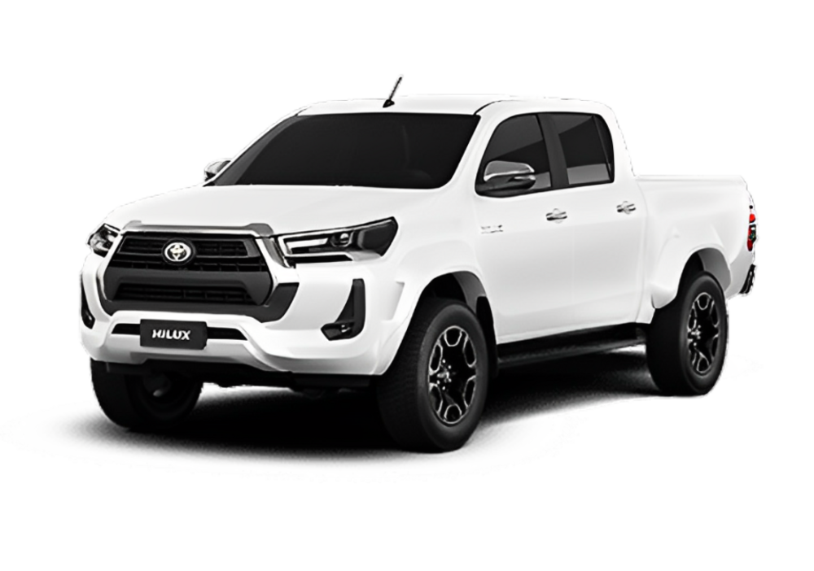

Toyota Hilux

A versão de entrada (Cabine Chassi MT) parte de cerca de R$ 235.590.
Já versões mais equipadas alcançam cerca de R$ 346.290 para a topo de linha.
O motor utilizado é o 2,8 L turbodiesel que gera cerca de 204 cv.
Tração 4×4 está disponível em diversas versões, reforçando o perfil robusto do veículo.
Voltar